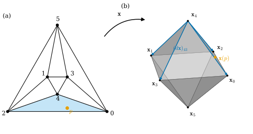
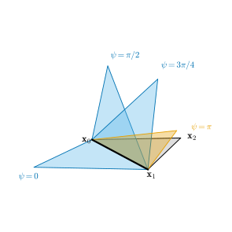
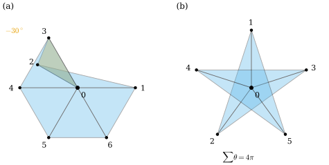

38.4 Simplicial Surfaces and Discrete Immersions
Goals
- simplicial surface에 vertex 위치를 주어 simplicial map을 만들고, 그 정의역이 Chapter 33의 geometric realization임을 설명할 수 있다.
- discrete differential \(d\mathbf{x}\)가 edge vector이고, 그것이 smooth differential을 edge 위에서 적분한 값임을 증명할 수 있다.
- discrete immersion을 locally injective simplicial map으로 정의하고, 그것이 “모든 vertex star가 embedded”와 같음을 증명할 수 있다.
- edge와 triangle이 퇴화하지 않는 것만으로는 부족함을 접힌 star와 branch point로 보이고, 평면 star의 판정법을 구현할 수 있다.
Prerequisites
- Chapter 33: simplicial surface Definition 33.4.2, Definition 33.4.3, Corollary 33.4.5, geometric realization Proposition 33.1.22, star와 link Definition 33.2.4, Proposition 33.2.14, signed incidence matrix Definition 33.5.6.
- Chapter 37: edge vector의 성질 Proposition 37.4.1, regular discrete curve Definition 37.4.2, Proposition 37.4.3.
- Section 38.1: immersion Definition 38.1.6, Proposition 38.1.10, Non-example 38.1.11. fundamental theorem for line integrals Proposition 35.4.6.
Motivation
Section 38.1–38.3에서 smooth immersion \(\mathbf{x}\)의 differential, metric, normal을 정했다. 이제 같은 것을 triangle mesh에서 정한다. Chapter 33은 mesh의 연결 구조를 simplicial surface로 정의했는데, 거기에는 모양이 없다. 어느 vertex가 어느 vertex와 이웃인지만 있다. Chapter 31은 반대로 vertex 위치와 face 목록을 처음부터 함께 주었고, 자기교차가 없다고 가정했다(Definition 31.1.1).
이 절은 두 관점을 잇는다. 연결 구조 위에 “모양을 주는 map”을 정의하고, 그 map의 differential과 regularity를 smooth의 경우와 나란히 정한다. 곡선에서 이 일은 이미 했다. 다각형의 edge vector가 discrete differential이었고, regular discrete curve는 locally injective인 다각형이었다(Proposition 37.4.3). surface에서도 같은 길을 가는데, 한 가지가 새롭다. 곡선에서는 “edge가 거꾸로 꺾이지 않는다”는 한 vertex의 조건으로 충분했지만, surface에서는 vertex 둘레의 triangle 전체를 함께 보아야 한다.
Simplicial Maps
simplicial surface \(\mathcal{K}\)(boundary가 있어도 된다, Definition 33.4.3)의 vertex를 \(1, \dots, n_0\)으로 번호 붙이자(예와 코드에서는 \(0\)부터 센다). \(\mathcal{K}\)는 \(\R^{n_0}\) 안에 geometric realization \(\abs{\mathcal{K}}\)을 갖는다(Proposition 33.1.22). vertex \(i\)는 standard basis \(e_i\)이고, simplex \(\sigma\)는 \(\{e_m : m \in \sigma\}\)의 convex hull \(\abs{\sigma}\)이며, 점 \(p \in \abs{\sigma}\)의 좌표 \(p^m\)이 곧 \(p\)의 barycentric coordinates다. 이 \(\abs{\mathcal{K}}\)이 “모양 없는” surface를 공간 속에 놓은 표준 모형이다. 이제 각 vertex에 \(\R^3\)의 점을 준다.
Definition 38.4.1 (simplicial map). \(\mathcal{K}\)가 vertex \(1, \dots, n_0\) 위의 simplicial surface이고 \(\mathbf{x}_1, \dots, \mathbf{x}_{n_0} \in \R^3\)이라 하자. map \(\mathbf{x}\colon \abs{\mathcal{K}} \to \R^3\),
를 vertex 위치 \(\mathbf{x}_m\)이 정하는 simplicial map(단체 사상)이라 한다. 위치들의 목록 \((\mathbf{x}_m)\)은 vertex마다 \(\R^3\)의 값을 하나씩 주는 것이므로 \(\R^3\)-valued discrete 0-form이다.
코드에서는 \(n_0\times 3\) 배열 V(\(m\)번째 행이 \(\mathbf{x}_m\))가 바로 이 map이다. (38.4.1)은 \(\R^{n_0}\) 전체의 linear map \(\tilde{\mathbf{x}}(p) = V^{\mathsf T}p\)를 \(\abs{\mathcal{K}}\)로 제한한 것이다. 이 linear extension을 \(\tilde{\mathbf{x}}\)로 쓴다(\(L\)은 Section 38.6에서 cotan Laplacian의 기호다).
Proposition 38.4.2 (basic properties of a simplicial map). (a) \(\mathbf{x}\)는 continuous이고 \(\mathbf{x}(e_m) = \mathbf{x}_m\)이다. (b) simplex \(\sigma\)의 점 \(p\)의 barycentric coordinates가 \((\lambda_m)_{m\in\sigma}\)이면 \(\mathbf{x}(p) = \sum_{m\in\sigma}\lambda_m\mathbf{x}_m\)이다. 곧 \(\mathbf{x}\)는 각 \(\abs{\sigma}\) 위에서 affine이고, \(\mathbf{x}(\abs{\sigma})\)는 \(\{\mathbf{x}_m : m \in \sigma\}\)의 convex hull이다(퇴화할 수 있다). (c) 두 simplicial map은 vertex 위치가 같으면 같다.
Proof. (a) linear map \(\tilde{\mathbf{x}}\)의 제한이므로 continuous이고, \(\tilde{\mathbf{x}}(e_m) = \mathbf{x}_m\)이다. (b) Proposition 33.1.22의 증명 (ii)에 의해 \(p \in \abs{\sigma}\)이면 \(p^m = \lambda_m\)(\(m \in \sigma\))이고 나머지 좌표는 \(0\)이다. 그러면 \(\mathbf{x}(p) = \sum_{m\in\sigma}\lambda_m\mathbf{x}_m\)이고, \(\lambda\)가 \(\lambda_m \ge 0\), \(\sum\lambda_m = 1\)을 모두 지나므로 image는 convex hull이다. (c) (38.4.1)이 vertex 위치만으로 쓰여 있다.
Figure 38.4.1의 왼쪽 (a)는 octahedron의 simplicial surface를 평면에 그린 것이다. 여기에는 길이도 각도 없다. 선분은 “이웃”이라는 정보일 뿐이고, 같은 graph를 어떻게 그려도 된다. 하늘색 face \((0, 2, 4)\) 안의 주황 점 \(p\)는 barycentric coordinates \((0.5, 0.3, 0.2)\)로 정해진다. 오른쪽 (b)가 vertex를 \(\pm e_k\)에 둔 simplicial map의 image다. \(p\)는 같은 barycentric coordinates로 \(\mathbf{x}(p) = 0.5\mathbf{x}_0 + 0.3\mathbf{x}_2 + 0.2\mathbf{x}_4\)에 간다. 파란 화살표는 아래에서 정의할 discrete differential이다.

Example 38.4.3 (simplicial maps).
(a) icosphere(dgmesh.icosphere(level))는 icosahedron을 나눈 simplicial surface에 unit sphere 위의 점을 vertex 위치로 준 simplicial map이다. (b) dgmesh.torus_mesh(2, 0.8, nu, nv)는 \(u, v\) 격자를 삼각형으로 나눈 torus 모양의 simplicial surface(\(\chi = 0\))에 \(\mathbf{x}_{ij} = \mathbf{x}(2\pi i/n_u, 2\pi j/n_v)\)(Notation의 torus of revolution)를 준 것이다. (c) hinge: triangle 두 개 \((0, 1, 2)\), \((1, 0, 3)\)로 된 simplicial surface with boundary에 \(\mathbf{x}_0 = (0, 0, 0)\), \(\mathbf{x}_1 = (1, 0, 0)\), \(\mathbf{x}_2 = (0.5, 0.8, 0)\), \(\mathbf{x}_3(\psi) = (0.3, -0.9\cos\psi, 0.9\sin\psi)\)를 준 것이다. 두 face의 normal 사이의 각이 \(\psi\)이고, \(\psi\)가 변해도 다섯 edge의 길이는 그대로다(Figure 38.4.2).
Non-example 38.4.4 (a map that is not simplicial). icosahedron의 simplicial map을 \(\mathbf{x}\)라 하고 \(\mathbf{y}(p) = \mathbf{x}(p)/\abs{\mathbf{x}(p)}\)(sphere로의 radial projection)라 하자. \(\mathbf{y}\)는 continuous이고 vertex 위치는 \(\mathbf{x}\)와 같지만, face를 평평한 triangle이 아니라 spherical triangle로 보낸다. face 안에서 affine이 아니므로 simplicial map이 아니다. 두 map이 vertex에서 같아도 다를 수 있다는 것은, simplicial map이 “vertex 값을 정하고 나머지는 linear하게 채운다”는 선택이라는 뜻이다.
The Discrete Differential
smooth immersion의 \(d\mathbf{x}\)는 parameter 방향을 공간의 vector로 보냈다. simplicial map에서 가장 자연스러운 방향은 edge다. Chapter 37의 곡선처럼, edge 위에서 \(d\mathbf{x}\)를 적분한 값을 기록한다.
Definition 38.4.5 (discrete differential). simplicial map \(\mathbf{x}\)의 discrete differential(이산 미분) \(d\mathbf{x}\)는 oriented edge \(i \to j\)마다 edge vector
를 주는 \(\R^3\)-valued discrete 1-form이다. 반대 방향에서는 \((d\mathbf{x})_{ji} = -(d\mathbf{x})_{ij}\)이다. edge를 dgdec.edge_list의 순서(\(i \lt j\), \(i \to j\))로 쌓으면 \(d\mathbf{x} = d_0\,V\)(\(n_1\times 3\))이고, \(d_0\)는 signed incidence matrix(Definition 33.5.6), 곧 discrete exterior derivative다(Definition 36.4.1, Proposition 36.4.4).
Proposition 38.4.6 (the discrete differential is the integrated differential). \(\mathbf{x}\)가 simplicial map이고 \(\tilde{\mathbf{x}}(p) = \sum_mp^m\mathbf{x}_m\)이 그 linear extension이라 하자.
- (a) \(\R^{n_0}\) 위의 \(\R^3\)-valued 1-form \(d\tilde{\mathbf{x}} = \sum_m\mathbf{x}_m\,dp^m\)을 oriented edge \([e_i, e_j]\) 위에서 적분하면
- (b) oriented triangle \((i, j, k)\)마다 \((d\mathbf{x})_{ij} + (d\mathbf{x})_{jk} + (d\mathbf{x})_{ki} = 0\)이다.
- (c) edge들의 열 \(i = i_0 \to i_1 \to \cdots \to i_m = j\)에 대하여 \(\sum_l(d\mathbf{x})_{i_li_{l+1}} = \mathbf{x}_j - \mathbf{x}_i\)이다.
- (d) \(\mathcal{K}\)의 1-skeleton이 connected이면, 두 simplicial map이 같은 discrete differential을 가질 필요충분조건은 하나가 다른 하나의 translation인 것이다.
Proof. (a) 성분마다 Proposition 35.4.6을 함수 \(p^m\)에 쓰면 \(\int_{[e_i, e_j]}dp^m = p^m(e_j) - p^m(e_i) = \delta_{mj} - \delta_{mi}\)이다. 따라서 \(\int d\tilde{\mathbf{x}} = \sum_m\mathbf{x}_m(\delta_{mj} - \delta_{mi}) = \mathbf{x}_j - \mathbf{x}_i\)이다. (b), (c)는 telescoping sum이다(Proposition 37.4.1과 같다). (d) \(\mathbf{w}_m = \mathbf{y}_m - \mathbf{x}_m\)이라 하면 \(d\mathbf{y} = d\mathbf{x}\)는 모든 edge \(ij\)에서 \(\mathbf{w}_i = \mathbf{w}_j\)라는 것이다. 1-skeleton이 connected이면 임의의 두 vertex가 edge의 열로 이어지므로 \(\mathbf{w}\)는 상수 vector다. 거꾸로 translation은 차이를 바꾸지 않는다.
(a)는 \(d\mathbf{x}\)가 단순한 “차이”가 아니라 smooth \(d\mathbf{x}\)(정확히는 linear extension의 differential)의 de Rham image라는 것이다(Definition 36.1.1, Example 36.1.7(c)). triangle 안에서 \(\mathbf{x}\)는 affine이라 \(d\mathbf{x}\)가 상수이고, 그 상수 linear map은 그 triangle의 두 edge vector로 정해진다. 따라서 discrete differential은 simplicial map의 smooth 미분 정보를 하나도 버리지 않는다. (b)는 \(d_1d_0 = 0\)(Theorem 36.4.8)이고, (d)는 \(d_0\)의 kernel이 상수라는 것이다(Lemma 36.4.12).
Figure 38.4.1(b)로 돌아가 보자. 파란 화살표 네 개가 vertex \(4\)에서의 \((d\mathbf{x})_{4j}\)다. 길이는 모두 \(\sqrt2\)이고, 이웃한 두 화살표의 cross product의 절반이 그 사이 face의 vector area \(A_f\mathbf{N}_f\)다(Exercise 38.3.2). 이처럼 길이, 각, 넓이, normal은 모두 \(d\mathbf{x}\)에서 계산된다. translation에 무관한 기하는 \(d\mathbf{x}\)가 전부 담고 있다는 것이 (d)다.
Discrete Immersions
smooth immersion은 “\(d\mathbf{x}\)가 injective”였다. simplicial map에서 이것을 그대로 옮기면 무엇이 되는가? triangle 안에서 \(d\mathbf{x}\)는 두 edge vector가 정하는 linear map이므로, injective라는 것은 그 triangle의 image가 퇴화하지 않는다(넓이가 \(0\)이 아니다)는 것이다. edge 방향으로는 edge 길이가 \(0\)이 아니라는 것이다. 그러나 이 조건은 vertex에서 무슨 일이 일어나는지 말하지 않는다. smooth 쪽에서 immersion이 주는 가장 중요한 결과는 국소 injectivity였다(Proposition 38.1.10). mesh에서는 그것을 정의로 삼는다 [CMU-DDG L14].
Definition 38.4.7 (discrete immersion). simplicial map \(\mathbf{x}\colon \abs{\mathcal{K}} \to \R^3\)이 locally injective이면, 곧 모든 \(p \in \abs{\mathcal{K}}\)에 대하여 \(\abs{\mathcal{K}}\)에서 \(p\)의 open neighborhood \(W\)가 있어 \(\mathbf{x}|_W\)가 injective이면 \(\mathbf{x}\)를 discrete immersion(이산 몰입)이라 한다. (\(\abs{\mathcal{K}}\)에는 \(\R^{n_0}\)의 subspace topology를 준다.)
곡선에서는 이것이 regular discrete curve와 같았다(Proposition 37.4.3). surface에서 이 정의를 확인하려면 무한히 많은 점을 보아야 할 것 같지만, 실제로는 vertex마다 유한한 검사로 충분하다(Proposition 38.4.9).
Non-example 38.4.8 (degenerate edges and triangles). (a) hinge에서 \(\mathbf{x}_3 = \mathbf{x}_0\)으로 두면 edge \(\{0, 3\}\) 전체가 한 점으로 가므로 그 edge의 어느 점 근처에서도 injective가 아니다. (b) hinge에서 \(\mathbf{x}_3 = (2, 0, 0)\)으로 두면 \(\mathbf{x}_0, \mathbf{x}_1, \mathbf{x}_3\)이 한 직선 위에 있다. triangle \((1, 0, 3)\)에서 \(\mathbf{x}\)는 affine map인데 image가 선분이므로 rank가 \(1\)이고, 그 triangle의 안쪽 점들이 서로 같은 점으로 간다. 두 경우 모두 smooth immersion 조건(\(d\mathbf{x}\)가 injective)이 face나 edge 위에서 깨진 것이다.
Proposition 38.4.9 (local injectivity is a condition on vertex stars). simplicial map \(\mathbf{x}\)와 vertex \(i\)에 대하여 \(C_i := \bigcup_{\tau\ni i}\abs{\tau}\)(\(i\)의 closed star의 realization)라 하자. 다음은 동치다.
- (i) \(\mathbf{x}\)는 discrete immersion이다.
- (ii) 모든 vertex \(e_i\)가 \(\mathbf{x}\)가 injective인 open neighborhood를 갖는다.
- (iii) 모든 vertex \(i\)에서 \(\mathbf{x}|_{C_i}\)가 injective이다. 곧 모든 vertex star가 embedded다(\(C_i\)가 compact이므로 \(\mathbf{x}|_{C_i}\)는 image 위로의 homeomorphism이다).
Proof idea: star는 vertex를 vertex로 하는 cone이고 \(\mathbf{x}\)는 그 위에서 linear하다. 그래서 star 안의 어떤 두 점이 겹치면, vertex 쪽으로 똑같이 축소한 두 점도 겹친다. 겹침이 vertex 바로 옆까지 내려온다.
Proof. (i)⇒(ii)는 정의다.
(ii)⇒(iii): vertex \(i\)를 고정하자. \(p \in C_i\)이면 \(p \in \abs{\tau}\)인 \(\tau \ni i\)가 있고, \(\abs{\tau}\)는 \(e_i\)를 포함하는 convex set이므로 \(t \in [0, 1]\)에서 \(e_i + t(p - e_i) \in \abs{\tau} \subseteq C_i\)이다. 또 \(\mathbf{x}\)는 linear map \(\tilde{\mathbf{x}}\)의 제한이므로
이다. 이제 \(p \neq p'\)인 \(p, p' \in C_i\)에서 \(\mathbf{x}(p) = \mathbf{x}(p')\)라 가정하자. \(p_t = e_i + t(p - e_i)\), \(p'_t = e_i + t(p' - e_i)\)로 두면 \(t \in (0, 1]\)에서 \(p_t - p'_t = t(p - p') \neq 0\)이고, (38.4.4)에 의해 \(\mathbf{x}(p_t) = \mathbf{x}(p'_t)\)이다. \(t \to 0\)이면 \(p_t, p'_t \to e_i\)이므로 \(e_i\)의 어느 neighborhood에도 같은 image를 갖는 서로 다른 두 점이 들어간다. 이것은 (ii)에 모순이다. 따라서 \(\mathbf{x}|_{C_i}\)는 injective다. \(C_i\)는 유한 개의 simplex의 합집합이라 compact이고 \(\R^3\)은 Hausdorff이므로 closed map lemma(Theorem 3.6.12)에 의해 homeomorphism이다.
(iii)⇒(i): vertex \(i\)의 open star를
로 두자. coordinate function \(p \mapsto p^i\)가 continuous이므로 \(\operatorname{st}(i)\)는 \(\abs{\mathcal{K}}\)의 open set이다. \(p \in \operatorname{st}(i)\)이면 \(p\)가 속한 simplex는 vertex \(i\)를 포함하므로 \(\operatorname{st}(i) \subseteq C_i\)이다. 임의의 \(p \in \abs{\mathcal{K}}\)는 \(\sum_mp^m = 1\)이므로 \(p^i \gt 0\)인 \(i\)가 있고, \(W = \operatorname{st}(i)\)가 \(\mathbf{x}\)가 injective인 open neighborhood다.
이 명제 덕분에 discrete immersion은 vertex마다 star 하나를 보는 국소 검사가 된다. 곡선의 판정(Proposition 37.4.3)도 같은 꼴이었다. 곡선의 vertex star는 edge 두 개이고, 그것이 embedded라는 것은 두 edge가 정반대로 꺾이지 않는다는 것이다.
Corollary 38.4.10 (necessary conditions). \(\mathbf{x}\)가 discrete immersion이면 (a) 모든 edge에서 \(\mathbf{x}_i \neq \mathbf{x}_j\)이고, (b) 모든 triangle의 image가 퇴화하지 않으며, (c) 두 triangle \(f = (i, j, k)\), \(g = (j, i, l)\)이 edge \(ij\)를 공유하면 \(\mathbf{N}_g \neq -\mathbf{N}_f\)이다(두 image triangle이 같은 평면에서 edge의 같은 쪽으로 접혀 있지 않다).
Proof. 모두 Proposition 38.4.9(iii)의 대우다. (a) edge가 한 점으로 가면 \(C_i\)에서 injective가 아니다. (b) triangle의 image가 퇴화하면 그 triangle 위의 affine map의 rank가 \(1\) 이하이므로 injective가 아니다. (c) (b)에 의해 \(\mathbf{N}_f, \mathbf{N}_g\)가 정의된다. \(e = \mathbf{x}_j - \mathbf{x}_i\)라 하면 \(\mathbf{N}_f \propto e\times(\mathbf{x}_k - \mathbf{x}_i)\)이고 \(\mathbf{N}_g \propto -e\times(\mathbf{x}_l - \mathbf{x}_j) = -e\times(\mathbf{x}_l - \mathbf{x}_i)\)이다(양의 상수배). \(\mathbf{N}_g = -\mathbf{N}_f\)이면 \(e\times(\mathbf{x}_k - \mathbf{x}_i)\)와 \(e\times(\mathbf{x}_l - \mathbf{x}_i)\)가 같은 방향이므로 \(\mathbf{x}_k, \mathbf{x}_l\)은 \(e\)를 지나는 같은 평면에서 직선 \(\mathbf{x}_i\mathbf{x}_j\)의 같은 쪽에 있다. 그러면 두 image triangle은 그 직선의 같은 쪽에서 edge를 공유하므로, edge의 중점 근처에서 그 쪽의 작은 half-disk가 두 triangle에 모두 들어간다. 그 half-disk의 점은 서로 다른 두 triangle의 안쪽 점에서 오므로 \(C_i\)에서 injective가 아니다.
(c)는 hinge(Example 38.4.3(c))가 \(\psi = \pi\)에서 discrete immersion이 아님을 말한다. Figure 38.4.2에서 파란 triangle이 \(\psi = 0, \pi/2, 3\pi/4\)로 회전하는 동안에는 회색 triangle과 공통 edge에서만 만나지만, 주황 \(\psi = \pi\)에서는 회색 triangle과 같은 평면, 같은 쪽에 겹쳐 놓인다. 그 사이의 \(0 \le \psi \lt \pi\)에서는 두 triangle이 다른 평면에 있거나(\(0 \lt \psi \lt \pi\)) 같은 평면의 반대쪽에 있어서(\(\psi = 0\)) 공통 edge에서만 만나므로 discrete immersion이다. 이 동안 edge 길이는 하나도 변하지 않는다.

퇴화를 모두 막아도 충분하지 않다. 평면 위의 star에서는 정확한 판정법이 있다.
Proposition 38.4.11 (planar stars). interior vertex \(i\)의 closed star의 vertex 위치가 모두 unit normal \(\mathbf{n}\)인 한 평면 위에 있다고 하자. star의 face를 \(\mathcal{K}\)의 orientation대로 \((i, j_k, j_{k+1})\)(\(k = 1, \dots, m\), \(j_{m+1} = j_1\))로 쓰고, \(\theta_k \in (-\pi, \pi]\)를 \(\mathbf{x}_{j_k} - \mathbf{x}_i\)에서 \(\mathbf{x}_{j_{k+1}} - \mathbf{x}_i\)까지 \(\mathbf{n}\) 둘레로 잰 signed angle이라 하자. \(\mathbf{x}|_{C_i}\)가 injective일 필요충분조건은 (\(\mathbf{n}\)을 필요하면 \(-\mathbf{n}\)으로 바꾸어) 모든 \(k\)에서 \(0 \lt \theta_k \lt \pi\)이고 \(\sum_k\theta_k = 2\pi\)인 것이다.
Proof idea: 모든 triangle이 같은 방향으로 돌면 각 triangle은 \(\mathbf{x}_i\) 둘레의 한 부채꼴을 차지하고, 부채꼴들이 차례로 이어진다. 각의 합이 \(2\pi\)이면 원을 정확히 한 번 덮고, \(4\pi\)이면 두 번 덮는다.
Proof. link는 cycle \(j_1, \dots, j_m\)이고(Definition 33.4.2) 이웃한 face \((i, j_{k-1}, j_k)\)와 \((i, j_k, j_{k+1})\)은 edge \(ij_k\)를 공유한다. \(d_k = \mathbf{x}_{j_k} - \mathbf{x}_i\)라 하자.
(⇐) \(\theta_k \in (0, \pi)\)이면 triangle \(k\)는 퇴화하지 않고(\(\theta_k = \pi\)이면 \(\mathbf{x}_i\)가 맞은편 변 위에 놓여 triangle이 선분으로 퇴화하므로 이 조건이 필요하다) vertex \(\mathbf{x}_i\)에서 방향 \(d_k\)부터 \(d_{k+1}\)까지 반시계 방향으로 각 \(\theta_k\)인 닫힌 부채꼴 \(S_k\) 안에 있다. \(d_1\)의 각을 \(\varphi_1\)로 두고 \(\varphi_{k+1} = \varphi_k + \theta_k\)라 하면 \(S_k\)는 각의 구간 \([\varphi_k, \varphi_{k+1}]\)이고, \(\sum\theta_k = 2\pi\)이므로 이 구간들은 원 둘레를 겹치지 않게 한 번 나눈다. 서로 다른 두 face의 image가 같은 점 \(y \neq \mathbf{x}_i\)를 가지면, 그 점의 방향은 두 구간에 모두 속하므로 두 face는 이웃이고 \(y\)는 공통 boundary 방향 \(d_k\) 위에 있다. 각 triangle이 그 boundary 반직선과 만나는 곳은 edge \([\mathbf{x}_i, \mathbf{x}_{j_k}]\)뿐이므로 두 원상이 모두 edge \(\abs{\{i, j_k\}}\) 위에 있고, edge 위에서 \(\mathbf{x}\)는 injective(길이 \(\neq 0\))이므로 원상이 같다. 한 face 안에서는 \(\mathbf{x}\)가 nondegenerate affine map이라 injective이다. \(y = \mathbf{x}_i\)의 원상은 \(e_i\) 하나뿐이다(다른 점은 \(\theta_k \gt 0\)인 부채꼴의 vertex가 아닌 곳에 간다). 따라서 \(\mathbf{x}|_{C_i}\)는 injective다.
(⇒) injective이면 Corollary 38.4.10(b)에 의해 \(\theta_k \notin \{0, \pi\}\)이고, 이웃한 두 face의 \(\theta\)의 부호가 다르면 두 triangle이 공통 edge의 같은 쪽에 놓여 (c)에 모순이다. cycle을 따라가면 모든 부호가 같으므로 \(\mathbf{n}\)을 골라 모두 양수로 만든다. \(\varphi_{m+1} - \varphi_1 = \sum\theta_k\)이고 \(d_{m+1} = d_1\)이므로 합은 \(2\pi w\)(\(w\)는 양의 정수)다. \(w \ge 2\)이면 어떤 방향은 두 부채꼴의 안쪽에 들어가고, \(\mathbf{x}_i\)에 충분히 가까운 그 방향의 점은 두 face의 image에 모두 들어가므로 injective가 아니다. 따라서 \(w = 1\)이다.
Corollary 38.4.12 (a sufficient test by projection). interior vertex \(i\)와 unit vector \(\mathbf{n}\)에 대하여, star의 vertex 위치를 \(\mathbf{n}^\perp\)에 정사영한 것이 Proposition 38.4.11의 조건(모든 \(0 \lt \theta_k \lt \pi\), \(\sum\theta_k = 2\pi\))을 만족하면 \(\mathbf{x}|_{C_i}\)는 injective다.
Proof. 정사영 \(\pi_{\mathbf{n}}\)과 \(\mathbf{x}\)의 합성은 vertex 위치가 \(\pi_{\mathbf{n}}(\mathbf{x}_m)\)인 simplicial map이다(linear map의 합성). Proposition 38.4.11에 의해 그것이 \(C_i\)에서 injective이므로 \(\mathbf{x}\)도 그렇다.
이 판정은 충분조건일 뿐이다. star가 embedded여도 \(\mathbf{n}\)을 잘못 고르면 통과하지 못한다(Exercise 38.4.4). Implementation 상자는 이 판정으로 icosphere와 torus mesh가 discrete immersion임을 확인했다. 다음 두 예는 edge 길이와 triangle 넓이가 모두 \(0\)이 아닌데도 discrete immersion이 아닌 경우다.
Example 38.4.13 (discrete immersions).
(a) icosphere(level 2)와 torus_mesh(2, 0.8, 24, 16)은 모든 vertex star가 Corollary 38.4.12를 통과하므로(Implementation 상자) Proposition 38.4.9에 의해 discrete immersion이다. (b) hinge는 \(0 \le \psi \lt \pi\)에서 discrete immersion이다. vertex가 넷뿐이고 모든 closed star가 두 triangle 전체이므로, 두 image triangle이 공통 edge에서만 만난다는 것(Figure 38.4.2의 설명)이 곧 Proposition 38.4.9(iii)이다. (c) 평평한 grid mesh(dgmesh.grid_mesh)는 모든 interior vertex star가 Proposition 38.4.11의 조건을 만족한다. 정사각형 격자의 각은 \(\pi/4\)와 \(\pi/2\)이고 한 vertex에서 합이 \(2\pi\)다.
Non-example 38.4.14 (a folded star). 평면의 정육각형 star(link vertex가 단위원 위 \(0^\circ, 60^\circ, \dots, 300^\circ\))에서 link vertex 2를 \(60^\circ\)에서 \(150^\circ\)(반지름 \(0.8\))로 옮기자. \(\theta_k\)는 차례로 \(150^\circ, -30^\circ, 60^\circ, 60^\circ, 60^\circ, 60^\circ\)이고 합은 \(360^\circ\)이다. 그러나 face \((0, 2, 3)\)이 시계 방향으로 돌아서 face \((0, 1, 2)\)가 차지한 부채꼴(\(0^\circ\)–\(150^\circ\)) 안의 \(120^\circ\)–\(150^\circ\) 부분에 겹쳐 놓인다. mesh를 평면에 펼 때 생기는 fold-over가 이것이다(Theorem 31.6.5는 이것이 생기지 않을 조건을 준다). 각의 합이 \(2\pi\)인 것만으로는 부족하다.
Non-example 38.4.15 (a branch point). valence 5인 평면 star에서 가운데 vertex \(0\)을 원점에, link vertex \(k\)를 단위원 위의 각 \(90^\circ + 144^\circ(k - 1)\)(\(k = 1, \dots, 5\))에 두자. 모든 face가 반시계 방향이고 \(\theta_k = 144^\circ\)이므로 퇴화도 fold도 없다. 그러나 \(\sum\theta_k = 720^\circ = 4\pi\)이므로 \(\mathbf{x}_i\) 근처의 모든 방향이 두 face에 덮인다. 예를 들어 vertex \(0\)에서 \(126^\circ\) 방향의 짧은 선분은 face \((0, 1, 2)\)(\(90^\circ\)–\(234^\circ\))와 face \((0, 3, 4)\)(\(18^\circ\)–\(162^\circ\))의 image 모두에 들어간다. 이 star의 link는 Chapter 37의 pentagram이다(Example 37.4.12(b)). pentagram은 regular discrete curve, 곧 곡선으로서는 locally injective이고 turning number가 \(2\)다. link가 regular라도 그것을 밑면으로 한 cone(star)은 vertex에서 locally injective가 아닐 수 있다. 이런 점을 branch point라 한다.
Figure 38.4.3에서 두 예를 보자. 왼쪽 (a)에서는 주황 triangle \((0, 2, 3)\)이 하늘색 triangle \((0, 1, 2)\) 위에 겹쳐 진하게 보인다. 오른쪽 (b)에서는 가운데 오각형 부분이 진하다. 그곳은 두 face가 겹쳐 덮은 곳이다. 두 그림 모두 edge 길이와 triangle 넓이는 멀쩡하다. 둘 다 vertex \(0\)의 star가 embedded가 아니므로 Proposition 38.4.9에 의해 discrete immersion이 아니다.

Summary
- simplicial map은 vertex 위치 \(\mathbf{x}_m\)을 정하고 각 simplex 위에서 barycentric coordinates로 linear하게 채운 map \(\abs{\mathcal{K}} \to \R^3\)이다. 배열
V가 곧 이 map이다(Definition 38.4.1, Proposition 38.4.2). - discrete differential \(d\mathbf{x} = d_0V\)는 edge vector이고, smooth differential을 edge 위에서 적분한 값이다. triangle 둘레의 합이 \(0\)이고 translation을 빼면 \(\mathbf{x}\)를 정한다(Proposition 38.4.6).
- discrete immersion은 locally injective simplicial map이고, 모든 vertex star가 embedded인 것과 같다(Proposition 38.4.9).
- 퇴화가 없는 것은 필요조건일 뿐이다. 평면 star는 “모든 triangle이 같은 방향, 각의 합 \(2\pi\)”일 때만 embedded이고, 접힌 star와 branch point가 두 조건이 각각 깨진 예다(Proposition 38.4.11, Non-example 38.4.14, Non-example 38.4.15).
다음 절에서는 discrete immersion의 normal을 정한다. face 안에서는 normal이 분명하지만 vertex에서는 아니다. Section 38.3의 \(\mathbf{N}\,dA = \tfrac12\,d\mathbf{x}\wedge d\mathbf{x}\)와 vector area를 vertex 둘레에서 적분하는 것에서 출발해, 흔히 쓰는 vertex normal들이 무엇을 보존하고 무엇을 잃는지 비교한다.
Exercises
Exercise 38.4.1 ★ regular tetrahedron의 vertex를 \(\mathbf{x}_0 = (1, 1, 1)\), \(\mathbf{x}_1 = (1, -1, -1)\), \(\mathbf{x}_2 = (-1, 1, -1)\), \(\mathbf{x}_3 = (-1, -1, 1)\)에 두자. 여섯 edge의 \((d\mathbf{x})_{ij}\)(\(i \lt j\))를 쓰고, face \((0, 1, 2)\)에서 Proposition 38.4.6(b)를 확인하여라. \(d\mathbf{x}\)가 \(d\mathbf{y}\)와 같은 다른 simplicial map \(\mathbf{y}\)는 무엇인가?
Solution
\((d\mathbf{x})_{01} = (0, -2, -2)\), \((d\mathbf{x})_{02} = (-2, 0, -2)\), \((d\mathbf{x})_{03} = (-2, -2, 0)\), \((d\mathbf{x})_{12} = (-2, 2, 0)\), \((d\mathbf{x})_{13} = (-2, 0, 2)\), \((d\mathbf{x})_{23} = (0, -2, 2)\)이다. face \((0, 1, 2)\)를 돌면 \((d\mathbf{x})_{01} + (d\mathbf{x})_{12} + (d\mathbf{x})_{20}\) \(= (0, -2, -2) + (-2, 2, 0) - (-2, 0, -2)\) \(= (0, 0, 0)\)이다. tetrahedron의 1-skeleton은 connected이므로 Proposition 38.4.6(d)에 의해 \(\mathbf{y}_m = \mathbf{x}_m + \mathbf{c}\)(상수 \(\mathbf{c}\))뿐이다. 모든 edge의 길이가 \(2\sqrt2\)라는 것도 \(d\mathbf{x}\)에서 읽힌다.
Exercise 38.4.2 ★★ 평면의 interior vertex star에서 모든 face가 반시계 방향(\(\theta_k \gt 0\))이고 \(\sum\theta_k = 4\pi\)이면 valence가 \(5\) 이상임을 보여라. 따라서 Non-example 38.4.15의 pentagram star는 가장 작은 평면 branch point다. valence 3인 평면 star는 face의 방향만 같으면 언제나 embedded임을 보여라.
Solution
각 face의 \(\theta_k\)는 nondegenerate triangle의 내각이므로 \(0 \lt \theta_k \lt \pi\)이다. valence가 \(m\)이면 \(\sum\theta_k \lt m\pi\)이므로 \(4\pi \lt m\pi\), 곧 \(m \ge 5\)이다. \(m = 5\)에서 \(\theta_k = 4\pi/5\)로 실현된다. valence 3이면 모든 \(\theta_k \gt 0\)일 때 \(\sum\theta_k\)는 \(2\pi\)의 양의 배수이면서 \(3\pi\)보다 작으므로 \(2\pi\)이다(Proposition 38.4.11의 증명). 따라서 embedded이다. valence 4에서도 같은 논법으로 합이 \(2\pi\)뿐이다(\(4\pi \lt 4\pi\)가 거짓이므로).
Exercise 38.4.3 ★★ consistently oriented인 두 face \(f = (i, j, k)\), \(g = (j, i, l)\)의 image가 한 평면에 있다고 하자. \(\mathbf{x}_k\)와 \(\mathbf{x}_l\)이 직선 \(\mathbf{x}_i\mathbf{x}_j\)의 반대쪽에 있으면 \(\mathbf{N}_g = \mathbf{N}_f\), 같은 쪽에 있으면 \(\mathbf{N}_g = -\mathbf{N}_f\)임을 보여라. hinge에서 \(\psi = 0\)과 \(\psi = \pi\)가 각각 어느 경우인가?
Solution
\(e = \mathbf{x}_j - \mathbf{x}_i\)라 하고, 평면 안에서 \(e\)에 수직인 unit vector \(w\)를 \(\mathbf{x}_k - \mathbf{x}_i = ae + bw\), \(b \gt 0\)이 되게 고르자. \(\mathbf{x}_l - \mathbf{x}_i = a'e + b'w\)이다. \(\mathbf{N}_f \propto e\times(ae + bw) = b\,e\times w\)이고, \(\mathbf{N}_g \propto (\mathbf{x}_i - \mathbf{x}_j)\times(\mathbf{x}_l - \mathbf{x}_j)\) \(= -e\times(\mathbf{x}_l - \mathbf{x}_i + \mathbf{x}_i - \mathbf{x}_j)\) \(= -e\times(a'e + b'w) = -b'\,e\times w\)이다(\(e\times e = 0\)). 반대쪽이면 \(b' \lt 0\)이라 \(-b' \gt 0\)이고 \(\mathbf{N}_g = \mathbf{N}_f\), 같은 쪽이면 \(b' \gt 0\)이라 \(\mathbf{N}_g = -\mathbf{N}_f\)이다. hinge에서 \(\mathbf{x}_2 = (0.5, 0.8, 0)\)이고 \(\psi = 0\)이면 \(\mathbf{x}_3 = (0.3, -0.9, 0)\)이 반대쪽이므로 normal이 같고(평평한 open book), \(\psi = \pi\)이면 \(\mathbf{x}_3 = (0.3, 0.9, 0)\)이 같은 쪽이므로 normal이 반대다(접힘).
Exercise 38.4.4 ★★ octahedron(Figure 38.4.1)의 vertex \(\mathbf{x}_0 = e_1\)의 star를 보자. (a) Corollary 38.4.12의 검사가 \(\mathbf{n} = e_1\)에서는 통과하고 \(\mathbf{n} = e_2\)에서는 실패함을 보여라. (b) 그런데도 이 star가 embedded임을 설명하고, 이 검사가 필요조건이 아님을 결론 지어라.
Solution
(a) \(\mathbf{x}_0\)의 이웃은 \(\pm e_2, \pm e_3\)이다. \(\mathbf{n} = e_1\)로 정사영하면 \(d_k = \mathbf{x}_{j_k} - e_1\)의 정사영은 \(\pm e_2, \pm e_3\)이고, link를 따라 \(90^\circ\)씩 같은 방향으로 네 번 돌아 합이 \(2\pi\)이다. \(\mathbf{n} = e_2\)로 정사영하면 이웃 \(\pm e_2\)의 \(d_k = \pm e_2 - e_1\)이 둘 다 \(-e_1\)로 가므로, link를 \(e_2 \to e_3 \to -e_2 \to -e_3\) 순서(바깥쪽 orientation)로 돌 때 네 face의 정사영한 각이 \(45^\circ, -45^\circ, -45^\circ, 45^\circ\)가 되고 합은 \(0\)이다. 음수인 각이 있으므로 검사가 실패한다(star_test는 \(\theta \le 0\)인 face에서 False를 낸다). 정사영한 star는 반쪽 평면에 접혀 들어가 있다. (b) 이 star의 image는 vertex \(e_1\)에서 만나는 볼록한 사각뿔의 옆면 네 개이고, 그것은 \(\mathbf{n} = e_1\)의 검사가 보인 대로 embedded다. 같은 star가 어떤 \(\mathbf{n}\)에서는 통과하고 어떤 \(\mathbf{n}\)에서는 실패하므로, 실패가 non-embeddedness를 뜻하지 않는다. 곧 이 검사는 충분조건일 뿐이다.
Exercise 38.4.5 ★★
Coding. \([0, 1]^2\)의 \(11\times 11\) grid mesh(\(h = 0.1\))의 interior vertex 81개를 seed 3845의 균등 난수 \([-1, 1]^2\)에 \(a\cdot h\)를 곱한 만큼 움직이자. \(a = 0.2, 0.4, 0.6, 0.8\)에서 star_test(\(\mathbf{n} = e_3\))를 통과하지 못하는 interior star의 수를 세어라. 평면 mesh에서 이 수는 무엇을 뜻하는가?
Solution
rng = np.random.default_rng(3845)
s = np.linspace(0, 1, 11)
V0, F0 = dm.grid_mesh(s, s)
inner = [i for i in range(len(V0)) if 0 < V0[i, 0] < 1 and 0 < V0[i, 1] < 1]
noise = rng.uniform(-1, 1, size=(len(V0), 2))
for amp in (0.2, 0.4, 0.6, 0.8):
V = V0.copy()
V[inner, :2] += amp * 0.1 * noise[inner]
bad = [i for i in inner if not star_test(V, F0, i, np.array([0.0, 0.0, 1.0]))]
print(f"jitter {amp:.1f} h: {len(bad)} of {len(inner)} interior stars fail")
jitter 0.2 h: 0 of 81 interior stars fail
jitter 0.4 h: 0 of 81 interior stars fail
jitter 0.6 h: 24 of 81 interior stars fail
jitter 0.8 h: 45 of 81 interior stars failmesh가 평면에 있으므로 Proposition 38.4.11에 의해 검사는 정확하다. 실패한 star는 embedded가 아니고, 그 vertex에서 mesh는 discrete immersion이 아니다. 이 난수에서는 \(a \le 0.4\)이면 실패가 없고, \(a = 0.6\)부터 일부 triangle이 뒤집혀(Non-example 38.4.14의 fold) 실패한다. \(a \le 0.4\)에서 실패가 없는 것은 이 seed의 결과일 뿐이다. 세 vertex가 좌표마다 \(ah\)까지 움직일 때 직각이등변 triangle의 orientation determinant는 최악의 경우 \(h^2(1 - 4a)\)이므로, 어느 triangle도 뒤집히지 않는다고 보장되는 것은 \(a \lt \tfrac14\)일 때뿐이다. 한 triangle이 뒤집히면 그 세 vertex의 star가 모두 실패하므로 수가 빨리 늘어난다. verify는 실패한 star에서만 두 face가 실제로 넓이가 있는 영역에서 겹치는 것을 polygon clipping으로 따로 확인한다.